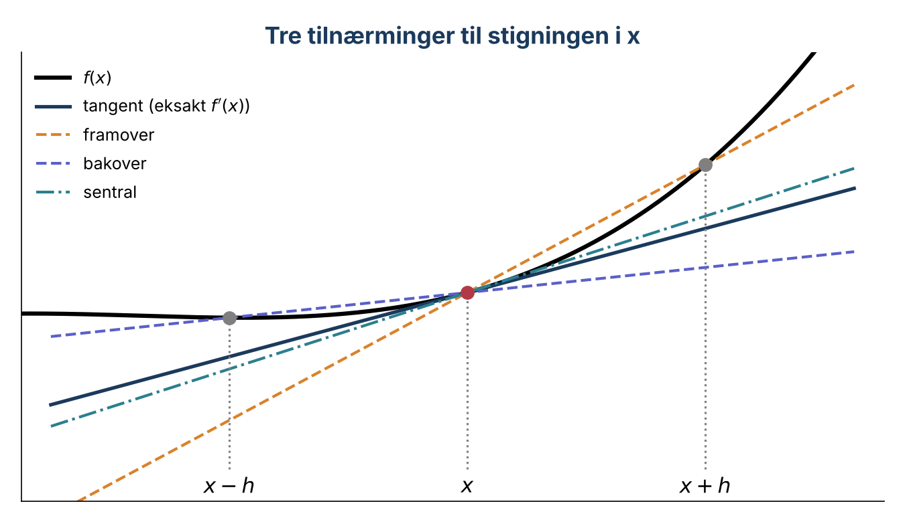
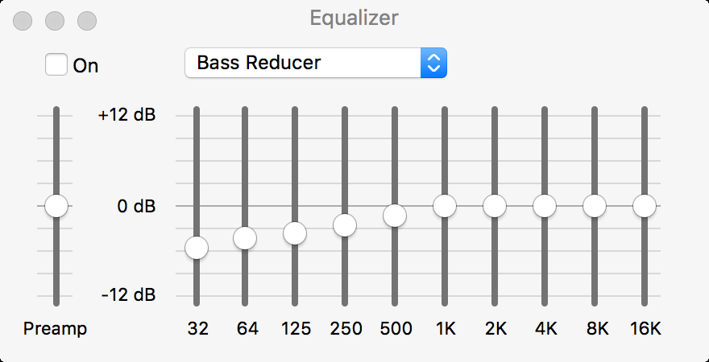

Forelesning 6: Numerisk derivasjon#
I dag skal vi
derivere numerisk med ulike tilnærminger
undersøke hvorfor et mindre steg ikke alltid gir et bedre svar
derivere eksperimentelle data og finne ekvivalenspunktet i en titrering
se at lyd og bilder også er tall som kan deriveres
import numpy as np
import pandas as pd
import matplotlib.pyplot as plt
Diskuter: I Newtons metode trengte vi den deriverte \(f'(x)\). Hva gjør vi hvis funksjonen er vanskelig å derivere, eller hvis vi bare har måledata og ingen formel?
Del 1: Fra grenseverdi til differanse#
Den deriverte beskriver endring. I kjemi skriver vi den ofte som \(\dfrac{dc}{dt}\) (reaksjonsfart) eller \(\dfrac{d\mathrm{pH}}{dV}\) (titrerkurve).
Den deriverte er definert som en grenseverdi:
En datamaskin kan ikke bruke en uendelig liten \(h\). Vi bruker derfor en liten, endelig steglengde. Det kalles framoverdifferansen:
Prøv selv: Skriv en funksjon forward(f, x, h) som returnerer framoverdifferansen. Test den på \(g(x) = x^2 - 4x + 5\) i \(x = 1\), og kontroller svaret med analytisk derivasjon.
def g(x):
return ??
Del 2: Er mindre steg alltid bedre?#
Vi deriverer \(\sin x\) i \(x = 1\) og sammenlikner med den eksakte verdien \(\cos 1\) for \(h\) fra \(10^{-1}\) til \(10^{-16}\).
Tipp først: Hvordan tror du feilen endrer seg når \(h\) blir mindre? Fyll inn linja som beregner den absolutte feilen, og kjør koden.
h_values = np.logspace(-1, -16, 16)
errors = []
for h in h_values:
error = ??
errors.append(error)
plt.loglog(h_values, errors, "o-")
plt.xlabel("h")
plt.ylabel("Absolute error")
plt.show()
To feilkilder konkurrerer:
Tilnærmingsfeilen blir mindre når \(h\) blir mindre, fordi sekanten nærmer seg tangenten.
Avrundingsfeilen blir større når \(h\) blir svært liten. Vi trekker fra to nesten like flyttall og deler på et svært lite tall.
For framoverdifferansen er \(h \approx 10^{-8}\) ofte et godt kompromiss, men den beste verdien avhenger av funksjonen og tallskalaen.
Del 3: Bakover- og sentraldifferanse#

Vi kan også bruke punktet bak \(x\), eller punkter på begge sider.
Bakover: \(\displaystyle f'(x)\approx\frac{f(x)-f(x-h)}{h}\)
Sentral: \(\displaystyle f'(x)\approx\frac{f(x+h)-f(x-h)}{2h}\)
Sentraldifferansen gir vanligvis en bedre tilnærming for samme \(h\).
Prøv selv: Skriv central(f, x, h). Legg den deretter til i feilanalysen, og plott feilen for begge metodene i samme figur. Hvilken metode gir minst feil? Ved hvilken \(h\)?
def central(f, x, h=1e-5):
return ??
errors_central = []
for h in h_values:
errors_central.append(??)
plt.loglog(h_values, errors, "o-", label="Forward")
plt.loglog(h_values, errors_central, "s-", label="Central")
plt.xlabel("h")
plt.ylabel("Absolute error")
plt.legend()
plt.show()
Diskuter: Med \(h = 10^{-2}\) er feilen omtrent \(4 \cdot 10^{-3}\) for framoverdifferansen og \(9 \cdot 10^{-6}\) for sentraldifferansen. Hvorfor er sentraldifferansen så mye bedre? Se på figuren med sekantene.
Del 4: Derivasjon av måledata#
Med måledata har vi ingen formel. Målepunktene bestemmer steglengden, og den er ofte ujevn. Her er en titrering av eddiksyre med 0,10 M NaOH. Filbanen ../datafiler/ viser til mappa med datafilene.
Diskuter: Hvor er ekvivalenspunktet? Hva kjennetegner \(\dfrac{d\mathrm{pH}}{dV}\) der?
Finn feilen: Programmet nedenfor finner ekvivalenspunktet med np.diff, som gir differansene mellom nabopunkter. Men stigningene plasseres på feil x-verdier. Hva er galt, og hvor bør hver stigning plasseres?
dpH_dV = np.diff(pH) / np.diff(volume)
volume_der = volume[:-1]
V_eq = volume_der[np.argmax(dpH_dV)]
print(f"Equivalence point: {V_eq:.2f} mL")
plt.plot(volume_der, dpH_dV, "o-")
plt.xlabel("Volume of 0.10 M NaOH (mL)")
plt.ylabel("ΔpH/ΔV (1/mL)")
plt.show()
\(\dfrac{\Delta y}{\Delta x} = \dfrac{y_{i+1}-y_i}{x_{i+1}-x_i}\) er den gjennomsnittlige stigningen over intervallet, og den hører derfor hjemme midt i intervallet:
Diskuter: Den største stigningen ligger mellom 33,52 og 33,56 mL. Kan vi rapportere ekvivalenspunktet som 33,54 mL? Hva begrenser presisjonen?
np.gradient#
Når vi har forstått differansene, kan NumPy gjøre jobben. np.gradient(y, x) bruker sentraldifferanser i de indre punktene og tåler ujevn avstand mellom x-verdiene.
Del 5: Alt er tall#
Derivasjon handler om forskjeller: Hvor mye endrer verdien seg fra ett punkt til det neste? For en datamaskin er lyd og bilder også bare tall. Da kan vi derivere dem på samme måte som en titrerkurve.
Lyd er lufttrykket målt 44 100 ganger i sekundet. Seks og et halvt sekund med lyd er nesten 288 000 tall.
Et bilde er en tabell med piksler. Hvert tall er lysstyrken i ett punkt.
Den deriverte finner vi som før, fra forskjellen mellom nabotall: \(\Delta y_i = y_{i+1} - y_i\)
Derivasjon av lyd#
wavfile.read gir samplingsraten (tall per sekund) og selve lyden som en array. Audio spiller av en array.
Tipp først: Hvordan tror du lyden høres ut etter at vi har derivert den?
from scipy.io import wavfile
from IPython.display import Audio

Den deriverte lyden mangler bassen. Lyd som svinger raskt (diskant), gir store forskjeller mellom nabopunkter. Lyd som svinger sakte (bass), gir små forskjeller. Derivasjon virker derfor som en equalizer som skrur ned bassen.
Det er også grunnen til at derivasjon forsterker målestøy: Støy varierer raskt fra punkt til punkt.
Derivasjon av bilder#
Et fargebilde er tre tabeller oppå hverandre: rød, grønn og blå. Gjennomsnittet av de tre gir et gråtonebilde. np.gradient på en tabell gir den deriverte i både y- og x-retning.
Prøv selv: Fyll inn linjene som deriverer gråtonebildet og legger sammen størrelsen på endringene i begge retninger.
img = plt.imread("../datafiler/kjemibygningen.jpg")
gray = np.mean(img, axis=2)
dy, dx = ??
edges = ??
plt.imshow(edges, cmap="gray", vmax=60)
plt.show()
Diskuter: Hvor blir det deriverte bildet lyst? Hva tilsvarer ekvivalenspunktet i titreringen i et bilde?
Oppgaver:
Beregn \(f'(2)\) numerisk med sentraldifferansen og kontroller analytisk for \(f(x) = e^x\) og \(f(x) = \sqrt{\ln x}\).
Konsentrasjonen av A i en reaksjon er målt ved
t = [0, 10, 20, 30, 40, 50]s:c = [1.00, 0.82, 0.68, 0.56, 0.47, 0.40]mol/L. Beregn \(-\Delta c/\Delta t\) og plott reaksjonsfarten mot midtpunktene i tidsintervallene. Hvordan endrer farten seg med tiden, og hvorfor?En forenklet potensiell energi er \(U(r)=r^{-12}-2r^{-6}\). Bruk sentraldifferansen til å finne omtrent hvor \(dU/dr=0\). Kontroller ved å plotte \(U(r)\). Hva betyr dette punktet kjemisk?
Bytt ut den analytiske deriverte i Newtons metode fra forrige forelesning med
central. Finn pH i 0,010 M eddiksyre med steglengdene \(10^{-8}\), \(10^{-5}\) og \(3 \cdot 10^{-4}\). Hvor mange iterasjoner trengs i hvert tilfelle? Hvorfor må steglengden velges i forhold til størrelsen på \([\mathrm{H_3O^+}]\)?Lag et datasett med ujevnt fordelte tidspunkter fra en kjent funksjon. Sammenlikn en beregning som feilaktig antar konstant \(\Delta t\) med
np.gradient(y, t).Deriver bildet
sommerfugl.jpgbare i x-retning og bare i y-retning. Plott de to resultatene ved siden av hverandre. Hvilke kanter får du fram i hvert tilfelle, og hvorfor?